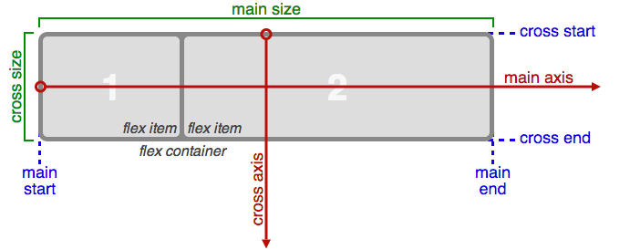
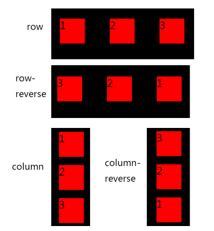
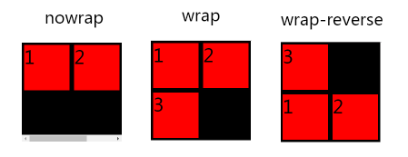
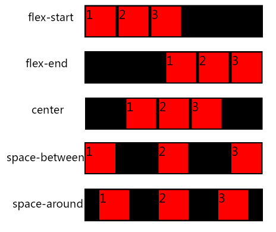
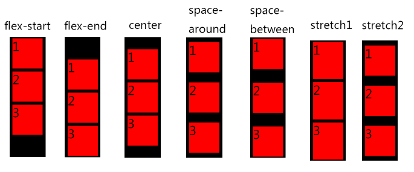
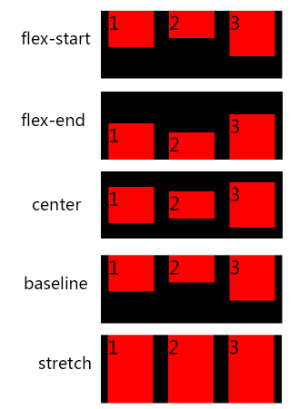

Flexbox布局属性
1.display: flex | inline-flex
容器默认存在两根轴：水平的主轴（main axis）和垂直的交叉轴（cross axis）。主轴的开始位置（与边框的交叉点）叫做main start，结束位置叫做main end；交叉轴的开始位置叫做cross start，结束位置叫做cross end。
项目默认沿主轴排列。

2.flex-direction: row | row-reverse | column | column-reverse
这个属性决定着主轴方向，也就是内容排列方向。
- row(默认值)：主轴为水平方向，内容从左向右排列。
- row-reverse：主轴为水平方向，内容从右向左排列。
- column：主轴为垂直方向，内容从上向下排列。
- column-reverse：主轴为垂直方向，内容从下向上排列。
举例：12345<div class="parent"><div class="child">1</div><div class="child">2</div><div class="child">3</div></div>
|
|
注意：子元素margin值必须设置为auto，令元素自动找恰当的居中位置。
各属性的效果:

3.flex-wrap: nowrap | wrap | wrap-reverse
这个属性主要用来定义伸缩容器里是单行还是多行显示，也就是内容是否换行。
- nowrap:flex-wrap的默认值，表示的是伸缩容器为单行，也就是容器不换行。
- wrap：表示的是伸缩容器为多行，也就是容器可以换行。且第一行为首行。
- wrap-reverse：表示的是伸缩容器为多行，也就是容器可以换行。且最后一行为首行。
举例：html文档结构仍与上一个例子一样123456789101112131415.parent{width: 220px;height: 220px;display: flex;flex-direction: row;flex-flow: wrap;overflow: auto;background-color: black;}.child{min-width: 100px;height: 100px;margin: 5px;background-color: red;}
flex-wrap为nowrap，因为不允许换行，容器内容超出边界，出现滚动条
flex-wrap为wrap，允许换行，把第一行当作首行进行排列。
flex-wrap为wrap-reaverse，允许换行，把最后一行当作首行进行排列。
各属性效果：

4.justify-content: flex-start | flex-end | center | space-between | space-around;
这个属性定义了内容项目在主轴上的对齐方式。具体对齐方式与主轴的方向有关。下面假设主轴为从左到右。
- flex-start(默认值)：内容项目向主轴的起始位置对齐。
- flex-end：内容项目向主轴的结束位置对齐。
- center：内容项目向主轴的中间位置对齐。
- space-between：内容项目在主轴平均分布。第一个项目在主轴的最开始位置，最后一个项目在主轴的最终点位置。
- space-around：内容项目在主轴平均分布，两端保留一半的空间。
举例：html文档结构仍与上一个例子一样123456789101112131415.parent{width: 600px;height: 110px;display: flex;flex-direction: row;flex-flow: nowrap;justify-content: flex-start;background-color: black;}.child{min-width: 100px;min-height: 100px;margin: 5px;background-color: red;}
注意：设置justify-content属性时候，内容项目的左右margin不可以设置为auto，否则属性失效。
各属性的效果:

5. align-content: flex-start | flex-end | center | space-between | space-around | stretch;
与justify-content属性类似，这个属性定义了内容项目在交叉轴上的对齐方式，具体对齐方式与交叉轴的方向有关。此属性的作用前提是有多条主轴，也就是多行内容项目。下面假设交叉轴为从上到下。
- flex-start：内容项目向交叉轴的起点对齐。
- flex-end：内容项目向交叉轴的终点对齐。
- center：内容项目向交叉轴的中点对齐。
- space-between：内容项目在交叉轴平均分布，第一行在交叉轴的最开始位置，最后一行在交叉轴的最终点位置。
- space-around：内容项目在交叉轴平均分布，两端保留一半的空间。
- stretch（默认值）：内容项目占满整个交叉轴。
举例：html文档结构仍与上一个例子一样123456789101112131415.parent{width: 120px;height: 400px;display: flex;flex-direction: row;flex-flow: wrap;align-content: stretch;background-color: black;}.child{min-width: 100px;min-height: 100px;margin: 5px auto;background-color: red;}
注意：设置align-content属性时候，设置内容项目的上下margin为auto会影响stretch的效果。
各属性的效果:
strectch1:将align-content设定为stretch,此时内容项目的高度会变，靠高度撑满容器。
strectch2:将align-content设定为stretch且将child的上下margin设定为auto,此时内容项目的高度不变，靠margin撑满容器。

6. align-items: flex-start | flex-end | center | baseline | stretch;
与align-content属性的多行内容不同，这个属性定义了每一行内容项目在交叉轴上的对齐方式。具体对齐方式与交叉轴的方向有关。下面假设交叉轴为从上到下。
- flex-start：交叉轴的起点对齐。
- flex-end：交叉轴的终点对齐。
- center：交叉轴的中点对齐。
- baseline: 项目的第一行文字的基线对齐。
- stretch（默认值）：如果项目未设置高度或设为auto，将占满整个容器的高度。
举例：
html文档12345<div class="parent"><div class="child" style="min-height:80px">1</div><div class="child" style="min-height:60px">2</div><div class="child" style="min-height:100px">3</div></div>
|
|
注意：设置align-items属性时候，内容项目的上下margin（交叉轴方向上的）不可以设置为auto，否则属性失效。
各属性及其效果:

7.其他设置在单个内容项目上的属性。
- order:
值为整数，默认为0。属性定义内容项目的排列顺序，也就是内容会根据order值得大小进行排列。 - flex-grow:
值为数值，默认为0。属性定义项目的放大比例。 - flex-shrink:
值为数值，默认为1。属性定义项目的缩小比例。 - flex-basis:
| auto
值为长度，默认为auto。属性定义了在分配多余空间之前，项目占据的主轴空间（main size）。 - flex: none | [ <’flex-grow’> <’flex-shrink’>? || <’flex-basis’> ]
flex属性是flex-grow, flex-shrink 和 flex-basis的简写，默认值为0 1 auto。后两个属性可选。 - align-self: auto | flex-start | flex-end | center | baseline | stretch;
align-self属性允许单个项目有与其他项目不一样的对齐方式，可覆盖align-items属性。默认值为auto，表示继承父元素的align-items属性，如果没有父元素，则等同于stretch。